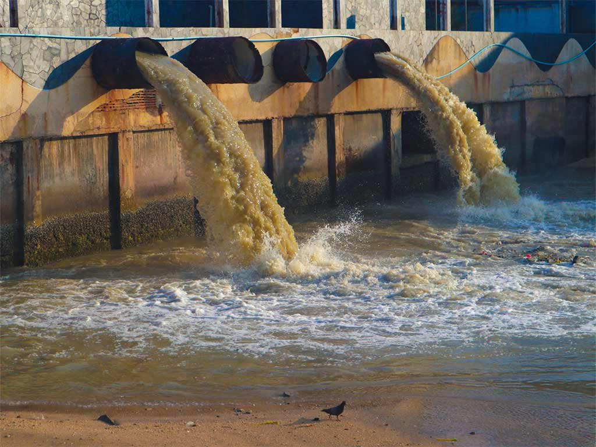

Aguas reciduales
A lo largo de nuestro día generamos una gran diversidad de residuos.
Entre ellos encontramos las aguas reciduales.
Pero no todos los tipos de aguas residuales derivan directamente de nuestra actividad.
Es por ello que es importante conocer los distintos tipos que existen, sus orígenes y particularidades.
Con ello podremos llegar a mejorar su calidad y facilidad su gestión.
Las aguas residuales son aquellas aguas con impurezas procedentes de vertidos de diferentes orígenes: domésticos e industriales, principalmente.
De esta forma, tenemos que las aguas residuales pueden contener elementos contaminantes originados en desechos urbanos o industriales.
También se conocen como aguas servidas, aguas fecales, aguas cloacales y aguas negras.
Las aguas grises entrarían también en la categoría de aguas residuales aun cuando no contienen desechos humanos.
Los componentes de las aguas residuales pueden ser físicos, químicos y biológicos:
Físicos: Los componentes y parámetros físicos son el color, el olor, los sólidos y la temperatura.
Químicos: Los componentes químicos más comunes son:
Orgánicos: carbohidratos, grasas animales, aceites, pesticidas, proteínas, contaminantes prioritarios, compuestos orgánicos volátiles, etc.
Inorgánicos: alcalinidad, cloruros, metales pesados, nitrógeno, PH, fósforo, contaminantes prioritarios y azufre.
Gases: sulfuro de hidrógeno, metano y oxígeno.
Biológicos: Los componentes biológicos más habituales son animales y plantas.

Existen diferentes tipos de aguas reciduales estas se clasfican en:
Aguas residuales domésticas
Son aquellas aguas que tienen su origen en viviendas y
están producidas en esencia por el metabolismo humano y por las actividades que se llevan a cabo en el ámbito doméstico.
Aguas residuales industriales
Dentro de este tipo se encuentran todas aquellas que han sido vertidas desde un lugar con finalidad comercial o industrial.
Mayormente son provenientes de procesos de manufactura, refinerías, industrias químicas y otras actividades productivas.
Aguas residuales urbanas
Hacen referencia a aquellas aguas que tienen origen doméstico e industriales.
También aquellas aguas que incluyen las aguas de correntía pluvial.
Tipos de aguas residuales domésticas |
AGUAS NEGRAS |
Provienen principalmente del inodoro y pueden contener excrementos, orina, papel higiénico y otros desechos sólidos orgánicos.
Su elevada carga orgánica y presencia de patógenos exigen un tratamiento intensivo. |
AGUAS GRISES |
Son las que se generan en lavaderos, duchas, lavabos y cocinas.
Aunque presentan menor carga orgánica que las aguas negras, pueden contener detergentes, grasas y sólidos en suspensión.
|
Aguas residuales industriales
Las aguas residules industriales son aquellas generadas en procesos productivos. Su composición varía en función del sector
Industrias químicas y petroquímicas: Suelen contener compuestos orgánicos volátiles, solventes, metales pesados y productos tóxicos
Industria alimentaria: Generalmente presentan alta carga orgánica, nutrientes y materia en suspensión.
Industrias textiles y farmacéuticas: Pueden incluir colorantes, reactivos químicos y compuestos de difícil degradación.
Industria metalúrgica: Con frecuencia contienen metales disueltos y partículas abrasivas.
Tipos de aguas residuales urbanas
Aguas residuales domésticas: Son aquellas las que están compuestas por aguas, líquidos y distintos materiales que vienen de las aguas de las viviendas.
Aguas residuales de la limpieza urbana: Este tipo de aguas residuales son las que tienen su origen en las tareas de limpieza de las ciudades dirigidas por los ayuntamientos y empresas privadas que prestan servicio en los municipios
La importancia del tratamiento de aguas urbanas
Es muy importante tratar estas aguas, ya que pueden ser perjudiciales para la salud pública y para el medio ambiente. Además, gracias a su tratamiento podemos eliminar los elementos contaminantes del agua y reutilizarla para actividades como el riego en la agricultura o las zonas urbanas.
Hay distintos tipos de tratamiento dependiendo si son domésticas, urbanas o industriales, pero todos ellos tienen como objetivo convertir un problema en una solución.
|